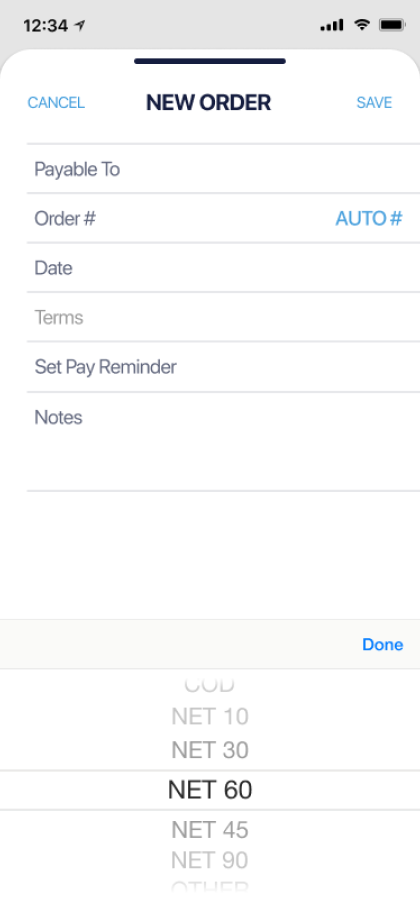
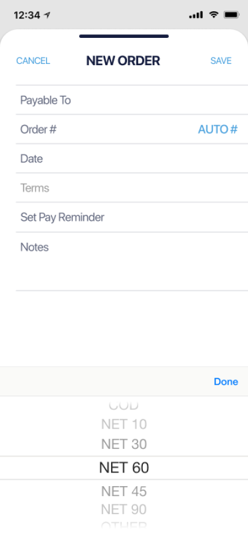

overview
Roles:
UX/UI Research & Design, Branding, Copy
Time:
8 weeks
Tools:
Sketch, Invision Studio & App, Figma
Deliverables:
Competitive Analysis, User Surveys, Personas, User Stories & Flows, Content Strategy, Copy, Wireframes, Prototyping, Preference Testing, Branding, UI
The problem
Business owners struggle every day to multitask between supplier relations, customer care, buying, quality control, and more.
There is always something that needs their immediate attention.

The product
OCTA was designed to meet the unique needs of these business owners.
Originally conceived as a Cloud app, comprehensive user research led OCTA to evolve into an app that helps people run the hardest parts of their business better.
my design process
The competition
Google Drive, Camcard, and Neat are all cloud applications that business owners use to organize different aspects of their business. Google Drive is an “all-in-one”, Camcard stores business contacts and posts news and updates, and Neat helps organize documents for accounting and tax time.
View SWOT AnalysisUser surveys
Take User SurveyObservation
Interviews
14 users in the survey cohort agreed to be interviewed. Nine of these users were retailers and five were wholesalers. I learned what frustrates them the most in their business, what their business goals are, and what motivates them.
These personas were created from the data collected from the user surveys, interviews, and on-location observation. Jen Retail | Age 44 | NJ Jen is a retailer and serial entrepenuer. She is excessively organized and cares a lot about making her customers happy. Kew Wholesale | Age 52 | NY Kew is a veteran wholesaler. He sells to independent retailers like Jen and small department stores. Items of high importanceUser personas

User stories
As a retailer
As a wholesaler
View User Stories
User flows
ONBOARDING
I cancelled OCTA’s onboarding altogether after showing it to a senior design mentor. As intuitive it proved to be during prototyping, she taught me that the most intuitive onboarding is no onboarding at all.
SAVING AN ITEM
Research showed me what tools potential users are currently using for their business. I designed the original “Saving an Item” flow to pull data from Quickbooks, Google Drive, Excel, or Dropbox.
REPORTING A DAMAGE / SHIPPING MISTAKE
By searching for the invoice number and choosing a “reason for return” or “type of damage”, a user can report a shipping mistake of damage. To remain consistent with the users need for better communication, I did not offer an open text field. This could be a platform for negative and emotional text that might potentially harm a business relationship.
GENERATING AN INVOICE ON SITE
Some companies reported having a number/letter system for their invoices. Some didn’t at all, and the process of creating one was distracting. Therefore, I designed an option to add a custom invoice number or generate a new one while creating an invoice.
MESSAGING / COMMUNICATION
View User FlowsContent Strategy
Read Content OutlineWireframes
OCTA was originally designed for iOS. While designing, I repeatedly referenced the Human Interface Guidelines and designed the screens to be equally accessible for both left and right handed users.
The developer was included in the wireframe testing, so we can get his insight and ideas on bettering the design.

DASHBOARD / TAB BAR
- Notifications of return requests, payment reminders for invoices, new messages and replies
- After testing - Invoice link directly from tab bar
- Access business-specific information directly on business contact page
INVOICING
- Testing showed the need to clarify where an invoice is in it’s lifecycle. (Purchase order, Backorder, Packing list)
- Show outstanding amount in total and per invoice
- After testing - added shipping cell to clarify who pays & amount
Branding
MIND MAPPING
These mind maps are a combination of user research, observation, and empathy. Each potental function of the app grew into possible directions to explore and sometimes problems that could arise. For example, being able to message multipe wholesalers at once was a high priority. Retail users had shared their competitive nature with me during interviews and observations and I spotted that this could present a serious privacy problem for them. It could also cause a lot of return spam messages. I needed to design messaging in a direct way that would circumvent these problems before they would have the chance to materialize.

To name the app, I tried words for commerce in different ancient languages like Latin and Hebrew. I researched the origin of commerce and read up on the historical silk and spice trade routes. I played around with Greek Mythology, such as Atlas. The idea was that the app would take all the weight of running a business off our users shoulders.

MORE SKETCHING
User research showed that privacy and safety are top priority for a business owner, which led me to potentially naming the app, “Cell”. This solution was backed by two sketches: One reminscint of a prison or bank cell, that holds, watches, and keeps info safe until the moment you need it. The other was a cell graph which looks like a business is trending and growing. At the same time I contemplated Atlas, I also contemplated Mercator with a “superhero” cape. That idea was meant to make a user feel that someone is swooping in to help them run their business stronger and faster. Cell had too negative a conotation and Mercator was both taken and over-the-top.
I did some research on acronyms and explored a few possibilities, but ended on OCTA. OCTA fit because I realized from my interviews that business owners feel like they have to do everything on their own. They don’t neccesarily want to hire more help, they just feel like they need an extra pair (or three!) of hands. The octopus seemed to fit perfectly. ANd OCTA also stands for “Organizing Communication for Better Trade and Accontability”. This covers all the problems that OCTA solves, in a nutshell.

MOODBOARD / LOGO
My research showed that business owners are used to using products like Dropbox, LinkedIn, Evernote, and Quickbooks for their business.
OCTA needed to mirror what a user would expect from a big brand like that, but stand out as a unique solution on their own. I used a mixture of blues and greens to create a solid graident that gives OCTA a modern, professional and approachful personality.
Trying some different Octopus icons on the graident background gave me a better direction to push OCTA’s logomark back to B&W. While I needed to show the extra “hands” (tentacles) to best communicate OCTA’s brand message, the multiple tentacles looked childish and unclear. I showcased just of them in the option 3 in the second sketch below, did some preference testing, and got excellent feedback.
PREFERENCE TESTING - LOGO MARK

I conducted A/B testing on OCTA’s logo mark with 20 potential users. Since opinions were split exactly in half, I paid close attention the the reasoning behind each user’s choice. The testers that liked the closed logo mark said things like, “It’s more clear/complete/defined”. The testers that liked the open mark better said it looked more “modern, compelling, and professional. Since OCTA is an app looking to modernize the way business owners work, we stuck with the open mark.
PREFERENCE TESTING - BUTTONS

HIFI Design


DASHBOARD
When a user first signs up for OCTA, the dashboard will explain what it will display after they plug in their info and start using the app. It will later become a home for notifications that show a user what is going on in their business. When they’re all caught up with notifications, the screen reverts back to a revolving set of business quotes designed to delight a user and motivate them to sign off and work on their physical business.

CREDIT REMINDERS
Multiple users expressed frustration with forgetting credits they had with their wholesalers. When a user creates an invoice and chooses a supplier, a credit reminder will pop up and offer to automatically deduct it from their current purchase order.

UI COMPONENTS
Color, type, and custom iconography further communicate with OCTA’s users. Microcopy further enhances usability & communication
 

TICS
I replaced drop down menus with tics. This achieved more screen space and less buttons


BUTTONS
Too many confusing buttons were replaced by text for better usability. Boxed-in placeholders were replaced by open space.

STYLING
What I Learned
If I were to start this project over, I probably would design OCTA to be less mobile-specific and more operating system agnostic. I was very focused on giving the user the ability to create invoices and report damages using their phone’s camera, and I didn’t take enough time to research other ways I can achieve that. I’d like to update the design based on development and usage discovery.
After my research and design was complete, the developer and I opted to switch OCTA from a mobile app to a progressive web app. The developer will still style the app with my iOS-like design, but it will work across mobile and other devices as a PWA.
Based on the observations and user research I did, we suspect that our wholesale users will use the mobile version a lot less, which is what prompted our late decision to build OCTA as a PWA. The basic version of the wholesale-side will be free. We want to encourage wholesalers to connect with their retailers through the app. We plan on showing OCTA to wholesalers at trade shows to spread the word. Once we have a large data-base, we can offer a paid version of the program to wholesalers that helps them grow their business by finding more customers.
return home